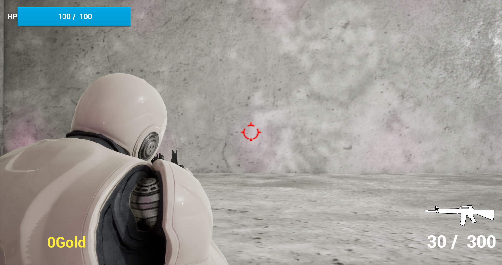
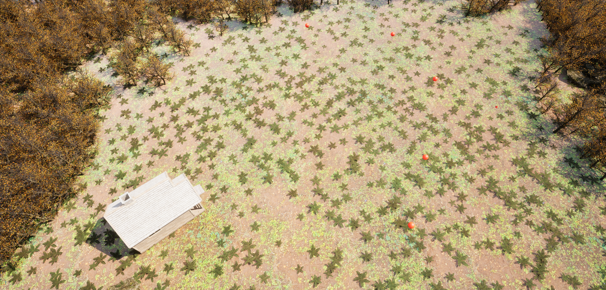
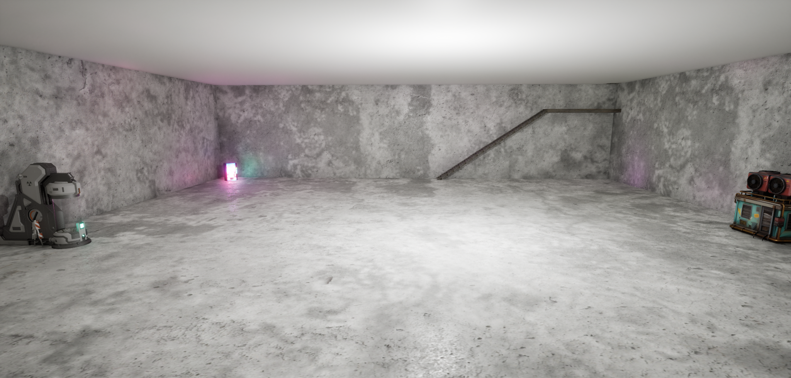

배운 내용을 실제 기능으로 연결합니다.
대학에서 프로그래밍을 배우며 Unreal Engine과 C++로 게임을 제작했습니다. 한 가지 문제에 집중해 원인을 파악하고 해결 방법을 찾아보며, 혼자 해결하기 어려운 부분은 적절한 시점에 질문해 보완하려고 합니다.
GAME DEVELOPMENT · PORTFOLIO
안녕하세요, 최규범입니다. Unreal Engine과 C++을 활용해 게임 시스템을 구현하며, 문제가 생기면 원인을 찾고 해결 방법을 탐색하는 개발자가 되고자 합니다.
01 / ABOUT
게임을 즐기는 데서 나아가, 게임 안의 기능이 어떻게 작동하는지 배우고 직접 구현하는 데 관심이 있습니다.
대학에서 프로그래밍을 배우며 Unreal Engine과 C++로 게임을 제작했습니다. 한 가지 문제에 집중해 원인을 파악하고 해결 방법을 찾아보며, 혼자 해결하기 어려운 부분은 적절한 시점에 질문해 보완하려고 합니다.
클라이언트 프로그래머를 오랫동안 목표로 삼아왔으며, 최근에는 기술과 시각적 표현을 연결하는 Technical Artist(TA) 업무에도 관심을 갖게 되었습니다. 아직 배워야 할 것이 많다는 점을 알고 있으며, 프로그래밍과 기술 이해도를 차근차근 높이고자 합니다.
02 / PROJECT
구현한 기능과 특히 집중했던 작업을 중심으로 정리했습니다.
교육과정에서 학습한 내용을 응용해 게임을 제작한 개인 프로젝트입니다. Unreal Engine과 C++을 활용해 게임 플레이에 필요한 여러 시스템을 구현하고, 학습한 프로그래밍 지식을 실제 개발 과정에 적용했습니다.
플레이어 입력에 따라 상호작용 대상이 상점인지 판단하고, 이에 맞는 상점 UI를 표시하는 흐름을 구현하는 데 집중했습니다. UI가 열리고 닫힐 때 마우스 표시와 입력 상태가 예상대로 처리되지 않는 문제를 겪었고, 해결 방법을 탐색한 뒤 교수님의 조언을 참고하여 원인을 파악하고 해결 방법을 찾아 문제를 해결했습니다.
게임의 실제 플레이 모습을 확인할 수 있는 영상입니다.
플레이 화면과 제작한 게임 공간을 확인할 수 있습니다.



03 / EDUCATION
메타버스콘텐츠과
입학: 2026년 3월 · 졸업 예정: 2028년 2월
04 / WORK APPROACH
문제가 생기면 바로 답을 구하기보다 현재 상황과 원인을 파악하고, 해결 방법을 스스로 탐색합니다.
충분히 시도해도 해결하기 어려운 경우에는 질문해 부족한 부분을 보완하고 문제를 해결하고자 합니다.
새로운 환경과 사람들에게 적응하고, 팀에서 필요한 역할이 비어 있다면 상황에 맞춰 참여하려 합니다.
한 가지 문제에 깊이 몰입하는 강점을 유지하면서도, 현재 목표에 필요한 작업과 이후 개선할 작업을 구분해 우선순위와 일정을 함께 고려하는 개발자로 성장하고자 합니다. 장기적으로는 동료들과 협력하며 게임의 완성도에 기여하는 클라이언트 프로그래머가 목표입니다.
05 / NEXT STEP
언리얼 엔진 C++을 활용한 게임 시스템 구현 경험을 바탕으로, 더 복잡한 기능도 안정적으로 설계하고 구현할 수 있는 개발자로 성장하고자 합니다.
클라이언트 프로그래밍을 중심으로 역량을 쌓는 동시에, TA 분야의 업무에도 도전하고 싶습니다. 특히 머티리얼 제작과 나이아가라를 활용한 이펙트 구현에 관심이 있습니다.
관련 기술을 꾸준히 학습해 게임 기능의 동작뿐 아니라 시각적 표현까지 고려할 수 있는 개발자로 성장하는 것이 목표입니다.